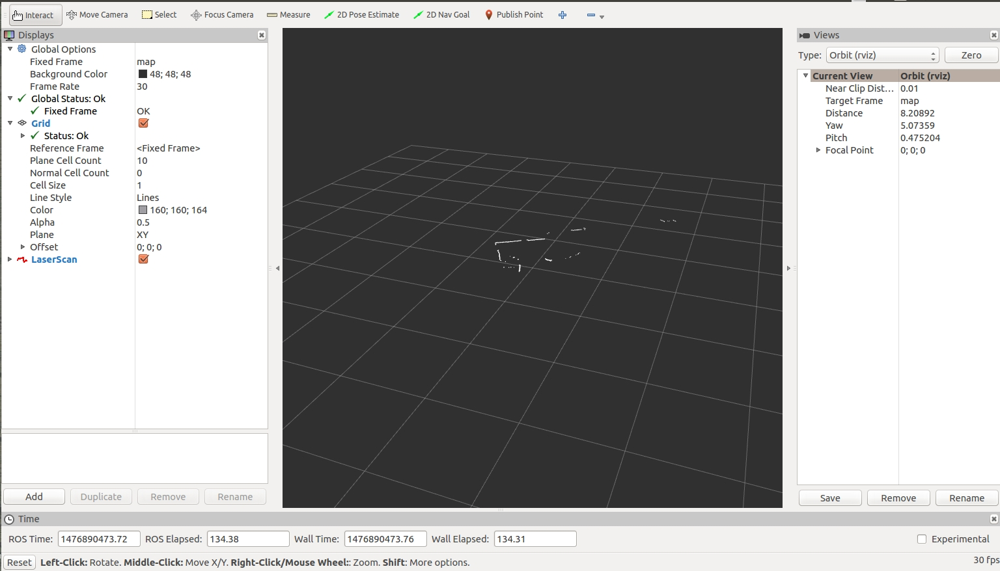

Implementation Overview
The ROS Mobile Mapper package is currently under development. This page is intended to be documentation for the implementation. An overview of the different files and how to use the package will be given in the following sections.
Running the Mobile Mapper Package
The following steps are required to launch the mapper:
- Initialize the roscore server
- source the devel/setup.bash file in the PixhawkMobileMapper directory
- roslaunch the mapper.launch file in the mobile_mapper_alpha ros package
Mapper.launch file
The launch file contains the start up commands to automatically launch the different nodes. Additionally, the launch file is where the device ports are specified for the different sensors (i.e. pixhawk, hokuyo, gps, camera...). The launch file is displayed below.
Display Output
Output can be displayed using rviz. Launch rviz using the rosrun command.  Configuring the settings as displayed in the image will result in the hokuyo's output displayed with respect to the static mapping frame. In other words, the hokuyo's data is reprojected as a function of the change in orientation measured by the pixhawk's imu. This reprojection is accomplished using a dynamic transform launched in the mapper.launch file.